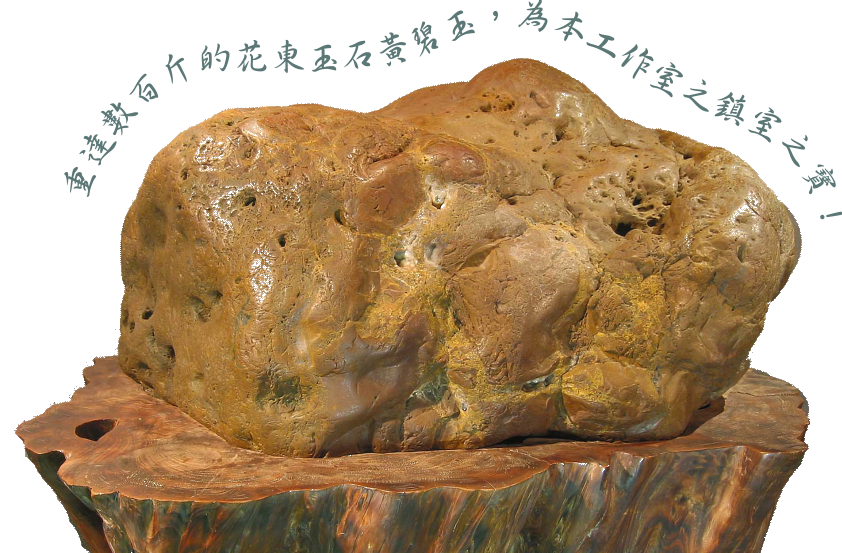
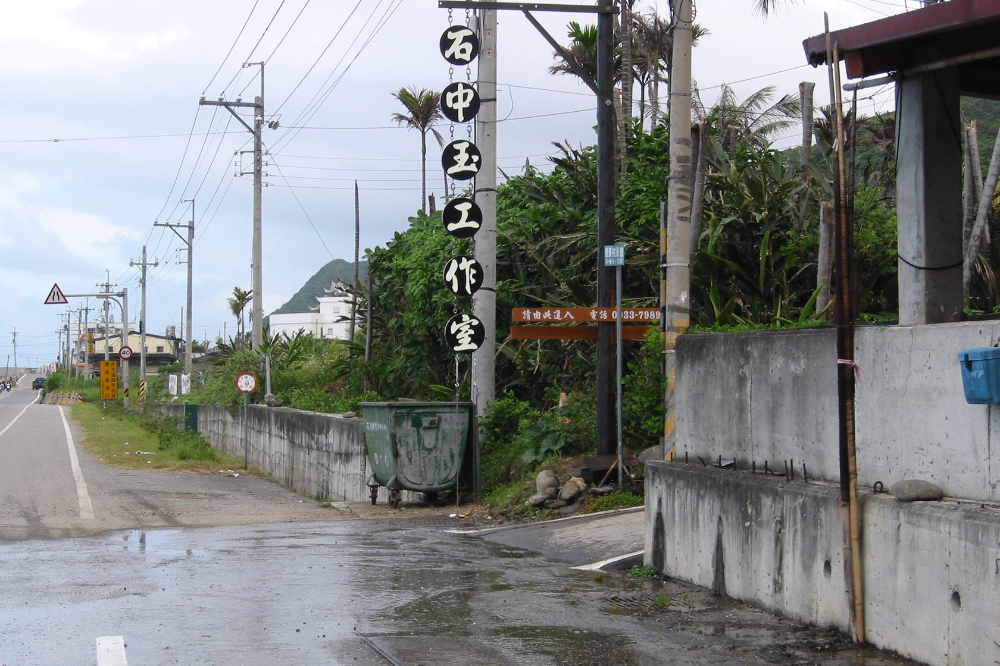
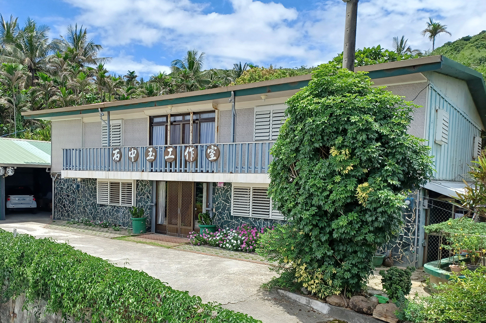
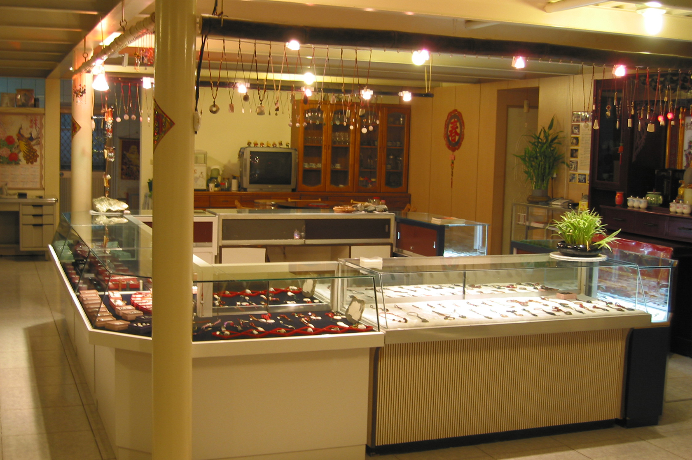
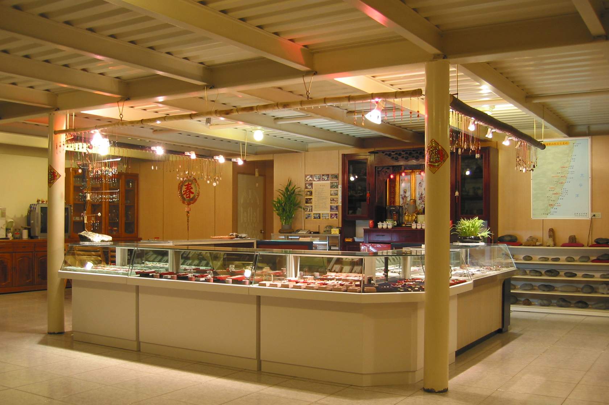
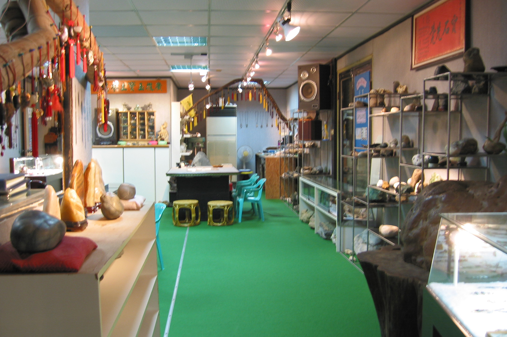
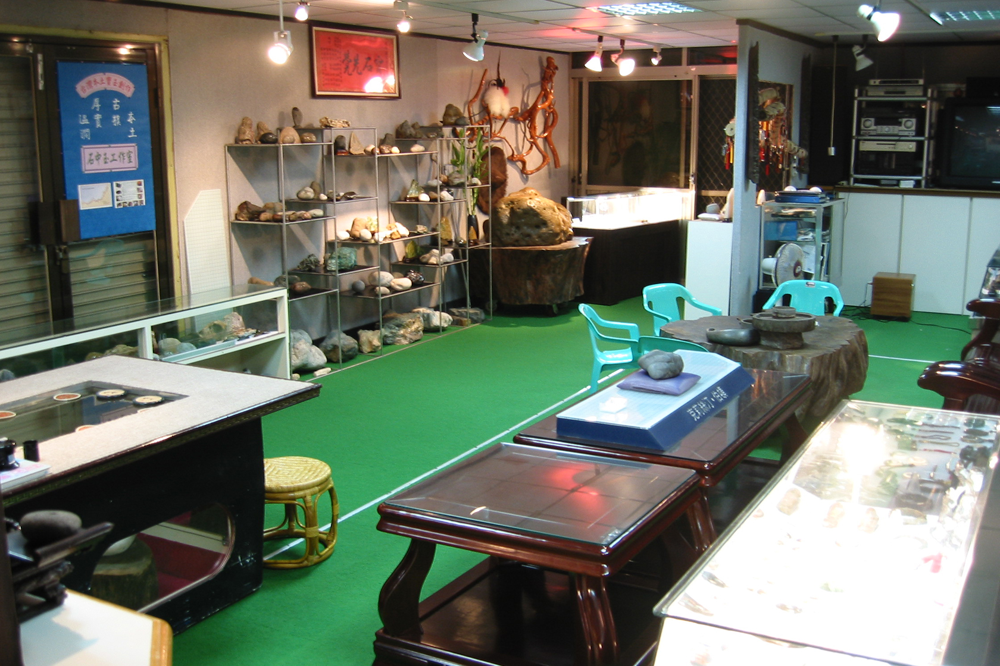
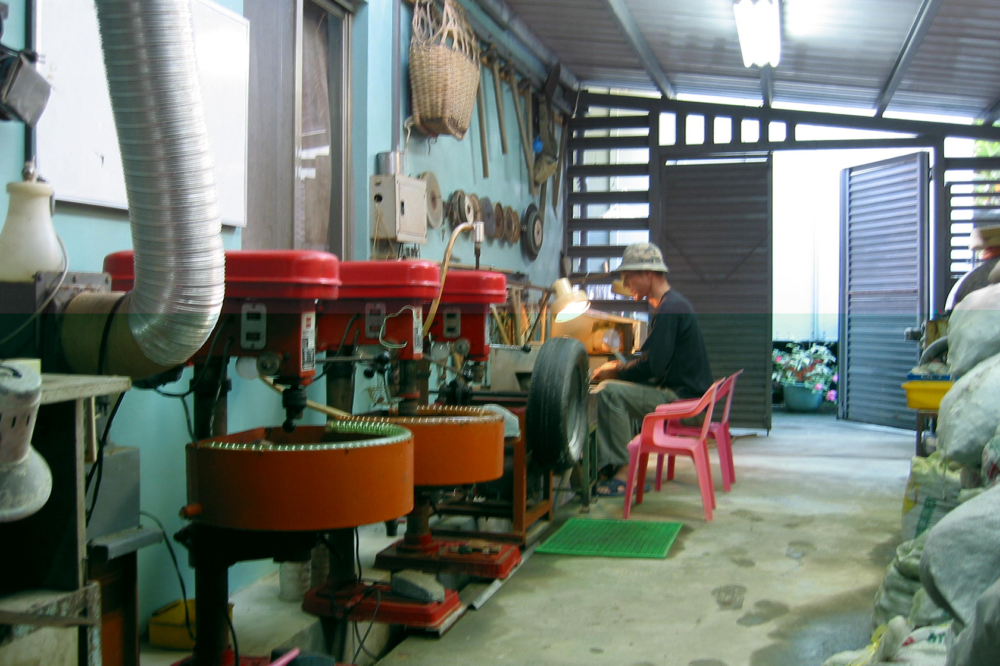
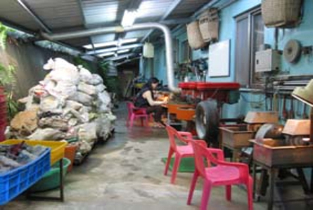
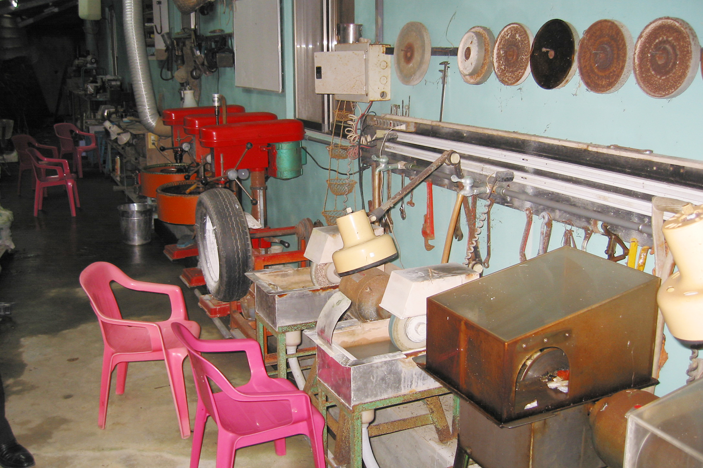

石中玉工作室簡介

石中玉工作室～東海岸玉石文化傳承的推手
這是一處記錄作者蟄居太平洋東岸近三十年的心路歷程，因緣之際認識了當地
玉石之美，並樍極推廣花蓮--東海岸“本土玉石文化“，作者在此扎根落實在
地文化教育傳承，期盼有朝一日能將台灣玉石之美推展到國際舞台，讓更多人
認識台灣這塊寶島，所蘊育出的寶藏。
工作室環境


上帝把賜給我們的寶藏隱藏石中，
石中有玉，
石中玉工作室因而誕生。
石中有玉，
石中玉工作室因而誕生。
創作天地
以下為作者的玉石創作場景，請各位先進多多指教。







歡迎來到石中玉工作室
作者將鉅述後山無數尋寶傳奇。
我們致力於傳承與創新玉石藝術，從東海岸的原石尋寶到雕刻與創作，
期待與您一起發現藏在石中的寶藏。
聯絡我們
台11線 東海岸線上。 聯絡電話：0933-798966 0910-123893